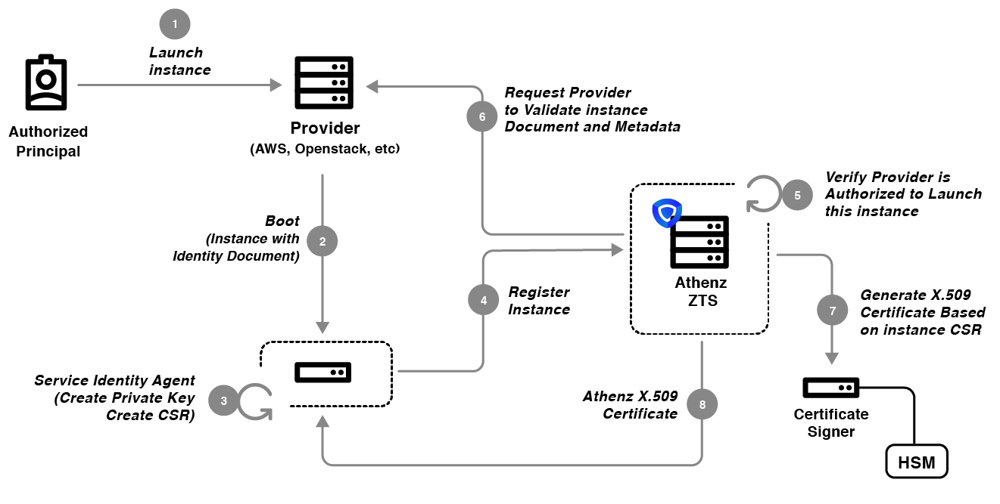

Copper Argos: Athenz Service Identity X.509 Certificates
Introduction
Although the focus of Athenz is authorization it had to address service authentication since it depends on it heavily since there was no generic solution to register and authenticate services within an organization. Athenz introduced the concept of service identities where the service administrator would generate a public/private RSA or EC key pair, register the public key in Athenz, and then it could issue authentication tokens (NTokens) signed by its private key that could be presented to Athenz to authenticate the service. While this works well when services talk to Athenz services, it is not secure for server-to-server communication. A tenant service must not present its NToken to a provider service since, if compromised, the provider service may act as the tenant service while communicating with other services. Athenz solution was to use authorization role tokens (ZTokens) that were scoped for a specific role in the requested domain.
Rather than having a service administrator generate a key pair and register in Athenz, a new solution called Copper Argos was designed and implemented that would allow the service to be identified by its X.509 certificate issued by Athenz: Athenz would integrate with a Certificate Signer Daemon that would store its private key in HSM (e.g. AWS CloudHSM) A Service Identity Agent (SIA) running on an instance would generate a key pair on the instance itself, generate a CSR and send along with its authentication details to ZTS Server to request a certificate for the service. Once the request is authorized and validated, ZTS would contact Certificate Signer Daemon to mint a certificate for the instance. It would be valid for 30 days and the SIA running on the instance will be responsible to refresh the certificate daily. The service running on host can use the generated private key and the X.509 certificate it received from ZTS to identify itself to other services running within the organization.
This model provides a significant improvement over the use of NTokens since the services now have a secure way of identifying themselves without the use of role tokens.
Copper Argos
Copper Argos is Athenz generalized model for service providers to launch other service identities in an authorized way through a callback-based verification model. The high level requirements for Copper Argos are as follows: 1. Once authorized as a service launcher in Athenz, the Provider will launch the Service by providing it with a signed identity document. 2. SIA installed on the instance during bootstrap process or available as part of the base image that the service is deployed on will create a public/private key pair, generate a certificate request (CSR) and submit the identity document along with its CSR to Athenz ZTS Service. 3. Athenz ZTS Service would carry out 2 authorization checks: a. It verifies that the Provider is authorized to launch services. This prohibits any service act like a provider and attempt to launch other services. b. It verifies that the Service being launched has authorized the Provider as its launcher. This prohibits any authorized Provider to launch any other service without explicit authorization from the tenant service administrator. 4. Athenz ZTS contacts the Provider to validate the signed instance identity document. 5. Once verified, ZTS contacts Certificate Signer Daemon to generate a X.509 Certificate valid for 30 days for the given CSR and returns to instance. 6. SIA is responsible for contacting ZTS daily to refresh the service X.509 certificate.
The next several section describe the for Copper Argos requirements in more detail.
Provider Service Registration
An important part of issuing X.509 certificates is trusting the Provider. The Provider must retrieve a TLS certificate for its own service from Athenz and use that as its Server Certificate. When ZTS contacts Provider Service to validate an instance document, it will require TLS authentication and verify that the certificate the service used for establish secure communication was issued for the expected provider service by ZTS itself.
As part of its registration, the provider will also specify a unique registered dns suffix that would be combined with the service identity name and included as a dnsName attribute value in the X.509 certificate. For example, if an instance deployed is going to have an Athenz identity of sports.api and the Provider’s dns suffix is sports.athenz.cloud, then the dnsName attribute in the generated X.509 certificate would be api.sports.sports.athenz.cloud. The official format for the dnsName attribute is
Instance Register Request
Before a tenant service can be launched by a specific provider and issued a TLS certificate for, the tenant domain administrator must authorize a specific provider service to launch its services. The provider is expected to configure separate launcher services for each data center and/or region it supports. This allows the tenant the flexibility to authorize the provider to launch its service in specific data center/region (e.g. grant launch action to provider sys.auth.aws.us-west-2) or in all supported data centers/regions (e.g. grant launch action to provider sys.auth.aws.*).
ZTS does not have knowledge of each provider’s signed instance document details - what’s included, what is the format or what crypto algorithm was used to sign the document. Although each provider is strongly recommended to represent their instance documents as signed Json Web Tokens, ZTS treats it as an opaque string and relies on the registered provider service callback verifier to validate the document.

ZTS does impose specific requirements on the X.509 CSR generated by SIA:
The Subject CN in the CSR must be the Athenz service identity name (e.g. sports.api - api service in sports domain)
The CSR must include a SAN dnsName attribute with the format:
Instance Refresh Request
During instance refresh request, ZTS Server carries out additional checks in addition to contacting provider service for verification of the instance. It will first verify that the connection is using the previous TLS certificate issued for the service and provider and the service authorization policies are still in place.

In case a host is compromised and the attacker obtains the private key and ZTS issued X.509 certificate corresponding to that key, Athenz has additional checks in place to prevent the attacker to continuously refresh the certificate. A requirement of Copper Argos is that the CSR that the SIA generates must include a unique id that the provider has assigned to that instance in the X509 v3 SAN Extension dnsName field. Since each certificate is uniquely identified by its Serial Number (defined as BigInteger - e.g. Serial Number: 7e:14:6f:a2:33:b4:49:84:cb:f1:1f:c5:9d:a8:38:cb) generated by Athenz CA, Athenz ZTS can use that information along with instance id to maintain list of all issued certificates for instances with their serial numbers, detect compromised certificate refresh requests and revoke specific hosts from the refresh requests.
When processing refresh requests, Athenz ZTS Server: Validates that the instance id in the CSR matches to the instance id of the certificate that was used for authentication. Retrieve the Instance ID record from the Certificate Database. This database is updated when the initial and refresh certificates are issued. The current serial number of the certificate must match to the certificate serial number registered in the instance ID record. The server keeps track of last 2 (current and previous) serial numbers thus allowing a single retry operation in case the client failed to update its local filesystem after receiving refreshed certificates. So if both the instance and the attacker start using the same instance id for refreshing certificates, Athenz ZTS will detect a mismatch between serial numbers assigned and used in those refresh requests, thus will revoke the instance from refreshing its certificates.
Conclusion
Copper Argos provides a secure and generic way for service providers to launch other authorized services with Athenz issued service identity X.509 certificates. These certificates provide a more secure solution than private key generated NTokens since they can be used to communicate with other Athenz enabled services without exposing their identity tokens.